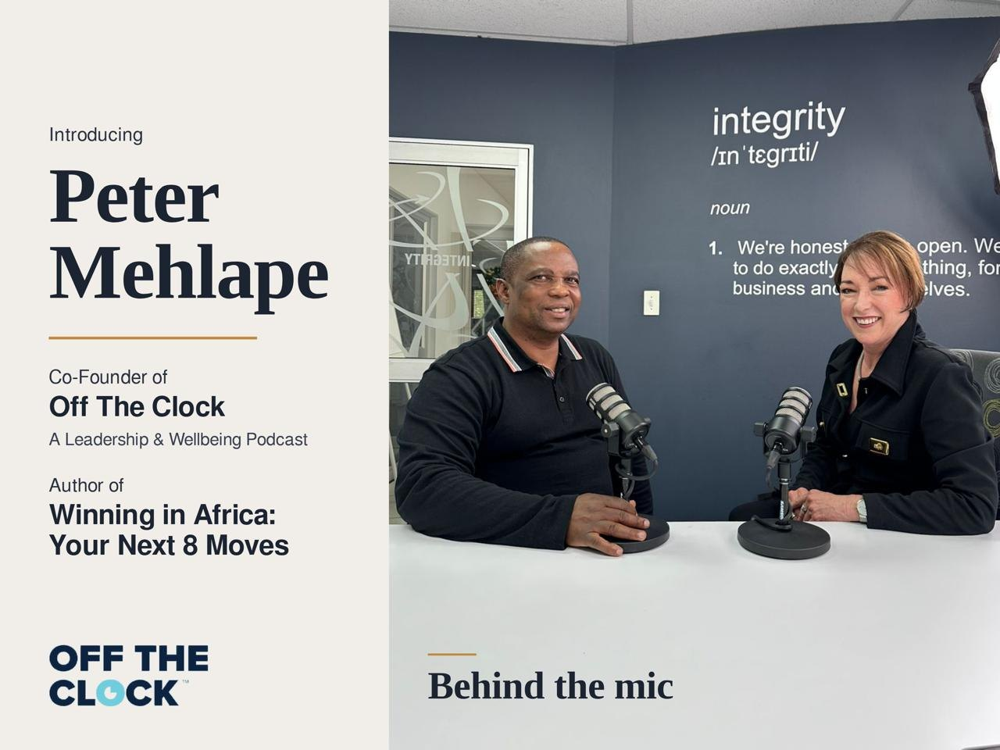
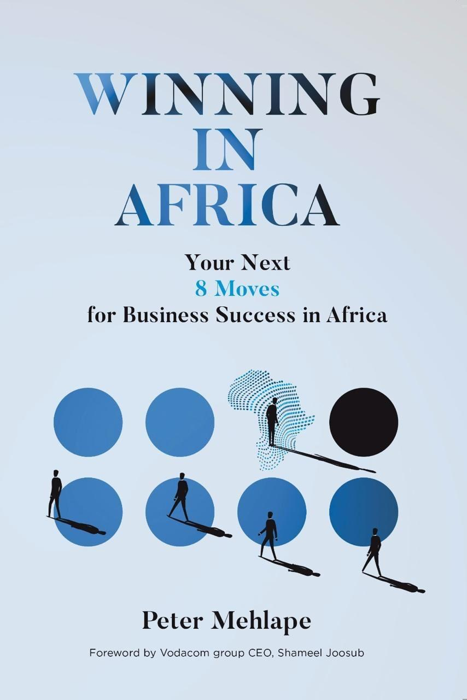

A Leadership & Wellbeing Podcast
Leadership, off the clock.
Honest conversations about leading well and living well — the lessons that don't fit on an agenda, recorded after the meeting is over.
The show
The work that shapes a leader rarely happens nine to five.
Off The Clock is a leadership and wellbeing podcast about the part of leading that happens when the meeting ends — the pressure you carry home, the decisions you replay at night, and the habits that keep you whole.
Every conversation sits at the same table: what it really takes to lead people, build something that lasts, and stay well while you do it. No scripts, no polished keynote answers. Just the lessons people usually only share off the record.
-
LeadershipDecisions, culture and the weight of responsibility.
-
WellbeingEnergy, rest and boundaries for people who carry a lot.
-
AfricaBuilding businesses and careers on the continent.
integrity
/ɪnˈtɛɡrɪti/
noun
- 1.Honest conversations.We say what we mean — on the mic and off it.
- 2.Practical wisdom.Lessons you can use on Monday morning, not just applaud on Friday.
- 3.The whole person.Leadership and wellbeing are the same conversation.
We record at a table with this word on the wall. We took it personally.
Conversations
What we talk about
Keep scrolling
Episodes
Pull up a chair
Two microphones, one table and the conversations leaders don't usually have in public.
-

Now introducingIntroducing Peter Mehlape
Meet the co-founder behind the mic: author of Winning in Africa: Your Next 8 Moves, and the reason this table exists.
Clock-out check
Are you ever really off the clock?
Three honest questions. Thirty seconds. Nobody sees your answers but you.
Co-founder & host
Peter Mehlape
Peter is the co-founder of Off The Clock and the author of Winning in Africa: Your Next 8 Moves for Business Success in Africa.
On the show he sits down for the conversations leaders rarely have in public — about pressure and purpose, health and ambition, and what it really takes to build something that lasts on this continent.
- Co-Founder
- Off The Clock
- Author
- Winning in Africa
- Foreword
- Shameel Joosub, Vodacom Group CEO

The book
Winning in Africa
Your Next 8 Moves for Business Success in Africa
Peter's playbook for building business success on the continent, set out as eight deliberate moves. The same thinking runs through every Off The Clock conversation: win the long game without losing yourself.
Foreword by Vodacom Group CEO, Shameel Joosub
FAQ
Good questions
Something else on your mind? Ask us directly.
What is Off The Clock?
A leadership and wellbeing podcast co-founded by Peter Mehlape. Each episode is an honest conversation about leading well and living well — the lessons people usually only share off the record.
Who is it for?
Leaders, founders, managers and anyone carrying responsibility for other people — and anyone who wants to do that without burning out.
Where can I listen?
On the major podcast platforms. The links on this page go live as each platform launches — subscribe to the newsletter and you'll hear the moment they do.
Can I suggest a guest or a topic?
Please do. Use the enquiry form below and choose “Be a guest / suggest one”. Tell us who they are and what the conversation should be about.
Can Peter speak at our event?
Yes. Send a short brief through the enquiry form — the date, audience and what you'd like people to leave with.
Do you work with sponsors and partners?
Selectively, and only with partners whose values fit the show. Choose “Partnerships” in the enquiry form.
Clock out with us
New episodes, the one idea worth keeping from each conversation, and first word on events. Straight to your inbox.
No spam. Unsubscribe any time. See our privacy notice.
Work with us
Guests, speaking, partnerships and book orders.